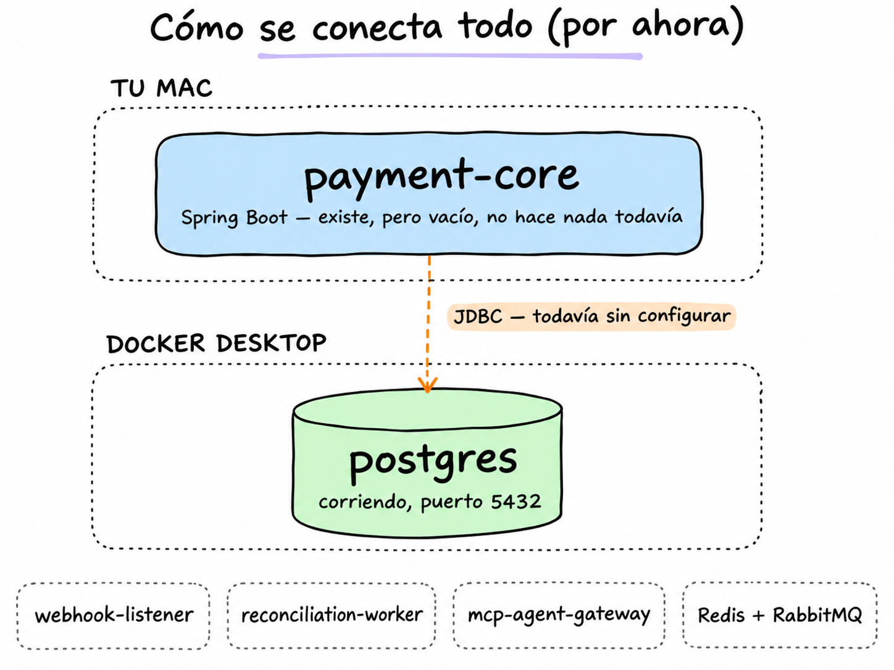
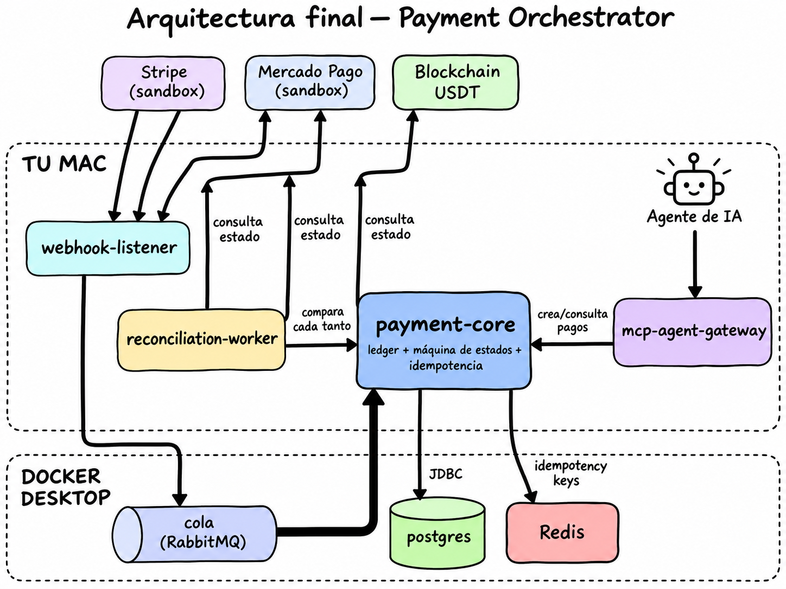

Dos vistas: dónde estamos parados hoy, y a dónde vamos.
Lo que existe de verdad hoy — solo payment-core (vacío) y Postgres corriendo, todavía sin conectar entre sí.

Hacia dónde vamos — los 4 servicios, la cola, la base, el cache, y cómo un agente de IA puede crear pagos.
